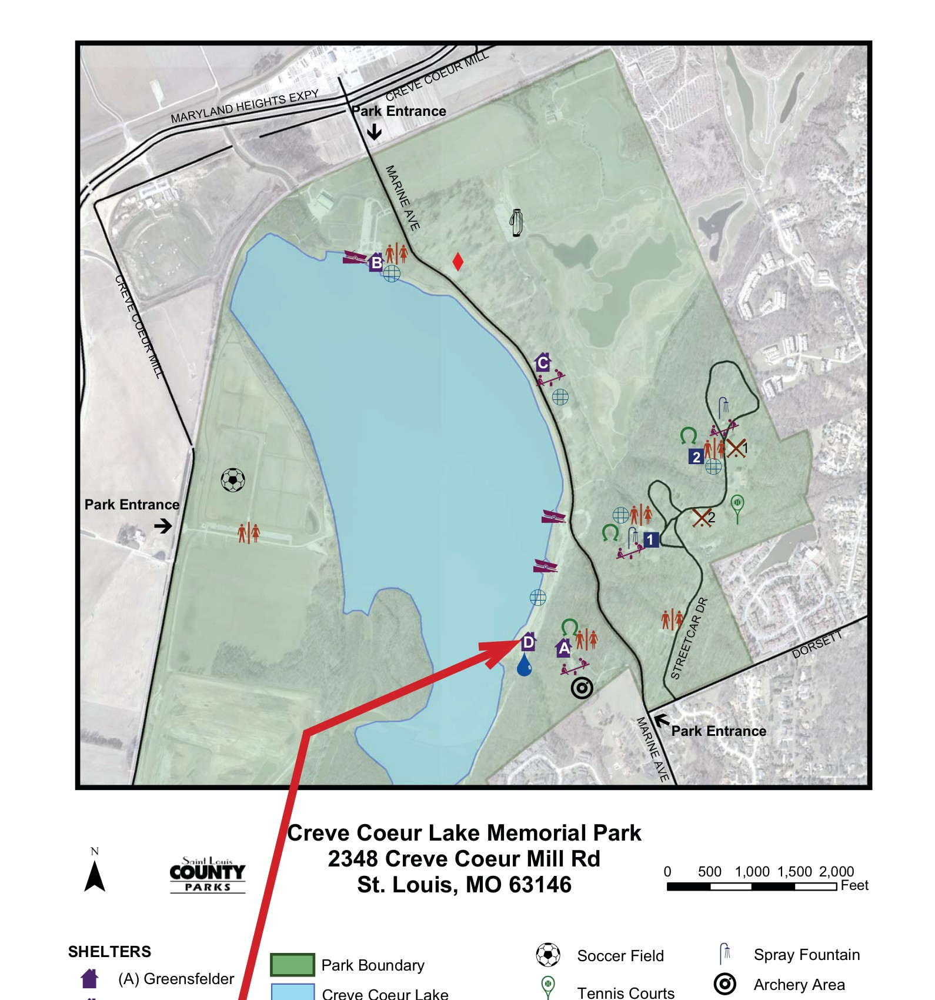

ACIM St. Louis Council

Annual Community Event
2026 Annual Picnic
Mark your calendar and join in community with ACIM friends. It's always a fun gathering!
Please register by Thursday, October 8 for food planning purposes. Bring your bike(s) and walking shoes — Creve Coeur Lake is beautiful in October!
The Taco Bell Shelter is Shelter D on the park map, located on the south lakefront area off Marine Drive. Enter from the main park entrance on Creve Coeur Mill Road.
Creve Coeur Lake Memorial Park website →
Enter from the Creve Coeur Mill Road entrance (top) and follow the red arrow to Shelter D on the lakefront.
The ACIM St. Louis community picnic has been gathering students from across the region for many years — a relaxed, joyful afternoon of fellowship by the lake. Attendance typically ranges from 25 to 50 ACIM friends. All are welcome.
Stay in Touch for Updates